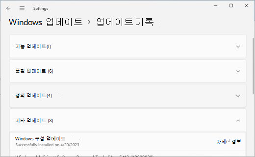

윈도우 11 업데이트 후 발열·꺼짐 — 내 PC도 대상일까요
얼마 전부터 노트북이 유난히 뜨겁게 느껴지시나요? 아니면 쓰던 중에 화면이 갑자기 꺼진 적 있으신가요? 윈도우 11 업데이트를 받은 뒤부터 이랬다면, 검색해서 이 글까지 오셨을 수 있어요.
결론부터 말하면 이 문제는 전체 윈도우 11 사용자 얘기가 아니에요. 마이크로소프트 공식 문서에 나온 대상은 일부 Dell 기기로 한정돼요. 특정 인텔 드라이버가 설치된 기기만 해당해요. 내 PC가 해당하는지는 두 가지만 보면 바로 알 수 있어요.
이 글은 2026년 8월 1일 기준으로 정리했어요. 마이크로소프트 릴리스 상태 문서와 관련 KB 문서를 직접 확인했어요.
이 문제, 전체 윈도우 11 사용자에게 다 해당하나요?
아니요, 전체 사용자가 아니라 특정 조건을 갖춘 일부 기기로 한정돼요.
이 문제는 2026년 6월 23일 나온 비보안 미리보기 업데이트 KB5095093 이후 나타났어요. 마이크로소프트 공식 문서에 근거한 내용이에요. 대상은 인텔 IPF 드라이버가 설치된 제한된 수의 Dell 기기예요.
인텔 IPF는 줄임말이에요. 원래 이름은 Intel Innovation Platform Framework예요. Dell의 일부 노트북에 들어가는 인텔 프로세서 참가자 드라이버를 가리켜요.
마이크로소프트는 원인을 비호환성으로 설명했어요. 인텔 드라이버와 새 Windows USB-C 연결 관리자 인터페이스 사이의 문제예요. 이 인터페이스는 KB5095093에 새로 들어갔어요.
공식 설명에는 성능, 전력 소비, 시스템 동작이 달라질 수 있다고만 적혀 있어요. 뜨거워진다거나 꺼진다고 콕 집어 쓰지는 않았어요. 다만 전력 소비나 동작 변화라는 표현 안에는 넓은 범위가 들어가요. 배터리가 빨리 닳거나 팬이 세게 도는 체감도 포함될 수 있어요.
| 날짜 | 무슨 일이 있었나 |
|---|---|
| 2026-06-23 | 비보안 미리보기 업데이트 KB5095093 배포, 이 시점부터 문제 발생 |
| 2026-07-14 | 문제 있는 기기에 보안 업데이트 KB5101650 일시 제공 보류 |
| 2026-07-18 | 수정 업데이트 KB5121767(대역 외) 배포, 핫패치 등록 기기는 KB5121768 |
세 사건 모두 Windows 11 버전 24H2·25H2 중 일부 Dell 기기가 대상이었어요. 서버용 윈도우는 이번 문제에 포함되지 않았어요.
그럼 내 PC가 이 문제 대상인지는 어떻게 확인하나요?
두 가지만 보면 돼요. 내 PC가 Dell 기기인지부터 봐요. 그리고 장치관리자에 인텔 IPF 드라이버 옆에 노란 느낌표가 떠 있는지 봐요.
- 설정 → 시스템 → 정보에서 제조사 이름을 확인합니다. Dell이 아니면 이번 문제 대상이 아닐 가능성이 높습니다.
- 시작 메뉴에서 '장치 관리자'를 검색해 엽니다.
- 목록에서 'Innovation Platform Framework' 또는 'IPF'가 들어간 항목을 찾습니다. 안 보이면 상단 메뉴의 보기에서 '숨겨진 장치 표시'를 켜고 다시 찾아봅니다.
- 그 항목 옆에 노란 느낌표 아이콘이 있는지 확인합니다.
- 느낌표가 없으면 이번 사안 대상이 아닙니다. 있으면 다음 단계로 넘어갑니다.
Dell 기기가 아니거나 장치관리자에 해당 항목 자체가 없다면 이번 사안 대상이 아니에요. 발열이나 꺼짐 증상이 있어도 KB5095093과는 다른 원인일 가능성이 커요.
느낌표가 있다면 지금 뭘 해야 하나요?
설정에서 Windows 업데이트를 열어 KB5121767을 설치하면 돼요. 2026년 7월 18일 대역 외(OOB) 업데이트로 나왔어요. 누적 업데이트라 이전 업데이트를 따로 먼저 깔지 않아도 돼요.
- 설정 → Windows 업데이트로 이동합니다.
- '즉시 최신 업데이트 가져오기' 토글이 켜져 있는지 확인합니다. 켜져 있었다면 이미 자동으로 받아졌을 수 있습니다.
- 꺼져 있었다면 '업데이트 확인'을 눌러 다운로드하고 설치합니다.
- 설치가 끝나면 재부팅합니다.
- 회사·기관에서 지급한 핫패치 등록 PC라면 KB5121768이 같은 문제를 대신 해결합니다.

설정 > Windows 업데이트 화면이에요. '즉시 최신 업데이트 가져오기' 토글이 켜져 있으면 KB5121767을 자동으로 받았을 가능성이 높아요.
이미지 출처: Microsoft 지원 — 장치에서 최신 업데이트 받기 · 네이버 본문엔 받아서 재업로드 권장
이 KB를 설치하면 Windows 11 25H2는 OS 빌드 26200.8894가 돼요. 24H2는 OS 빌드 26100.8894가 돼요. 두 값 모두 KB5121767 공식 문서 제목에 그대로 나와 있는 빌드 번호예요.
업데이트를 확인해도 안 뜨거나 설치가 안 될 때는요?
먼저 업데이트 기록에서 KB5121767이 실제로 설치됐는지부터 확인해 보세요.
- 설정 → Windows 업데이트 → 업데이트 기록을 엽니다.
- '기타 업데이트' 항목을 펼쳐 KB5121767 또는 KB5121768이 보이는지 확인합니다.
- 안 보인다면 재부팅 후 다시 업데이트 확인을 눌러봅니다.

설정 > Windows 업데이트 > 업데이트 기록 화면이에요. '기타 업데이트'를 펼치면 설치된 KB 목록을 볼 수 있어요.
이미지 출처: Microsoft 지원 — 장치에서 최신 업데이트 받기 · 네이버 본문엔 받아서 재업로드 권장
그래도 안 뜬다면 조급해하지 않으셔도 돼요. 영향을 받은 기기는 KB5101650이 먼저 일시 보류됐던 이력이 있어요. 그래서 정상 기기보다 업데이트 확인 순서가 조금 늦게 나타날 수 있다고 알려져 있어요. 정확한 배포 속도는 기기별로 다르다고만 안내돼 있어요. 구체적인 일수는 공식 문서에 없어요.
자주 묻는 질문
Q. Dell 기기가 아니면 전혀 신경 안 써도 되나요?
마이크로소프트가 공개한 범위는 특정 인텔 드라이버가 있는 일부 Dell 기기로 한정돼요. 다른 제조사 PC라면 이번 사안 대상이 아닐 가능성이 높아요.
Q. 서버용 윈도우도 영향을 받나요?
아니요. 공식 문서의 영향 플랫폼 목록에 서버는 없다고 명시돼 있어요. 클라이언트용 Windows 11 24H2·25H2만 해당해요.
Q. KB5121767을 설치하면 이전 업데이트들도 순서대로 다 깔아야 하나요?
아니요. 누적 업데이트라 이전 업데이트를 따로 먼저 설치할 필요 없이 한 번에 최신 상태가 돼요.
Q. 기업에서 핫패치를 쓰는 PC는 어떻게 하나요?
핫패치로 등록된 PC는 KB5121768이 같은 문제를 해결해요. 이 KB도 같은 날인 2026년 7월 18일 나왔어요.
참고한 곳
· Microsoft Learn — Windows 11, 버전 25H2 알려진 문제 및 알림
· Microsoft Learn — Windows 11, 버전 24H2 알려진 문제 및 알림
· Microsoft 지원 — 2026년 7월 18일 KB5121767 (대역 외)
· Microsoft 지원 — 2026년 6월 23일 KB5095093 (미리 보기)
· Microsoft 지원 — 2026년 7월 14일 KB5101650 (보안 업데이트)
· Microsoft 지원 — 2026년 7월 18일 핫패치 KB5121768 (대역 외)
하루 정리
· 이번 문제는 전체 윈도우 11 사용자 얘기가 아니에요. 일부 Dell 기기로 한정된 얘기예요(2026-06-23 KB5095093 이후).
· 확인 순서는 간단해요. Dell 기기인지 보고, 장치관리자에서 인텔 IPF 드라이버를 찾아요. 그 옆에 노란 느낌표가 있는지 보면 돼요.
· 느낌표가 있다면 2026년 7월 18일 나온 KB5121767을 설치하면 해결돼요. 핫패치 등록 기기는 KB5121768이 대신 처리해요.
느낌표가 없다면 이번 사안과는 무관한 다른 원인일 가능성이 커요. 그때는 발열·강제종료의 다른 원인을 따로 살펴보시는 게 좋아요.